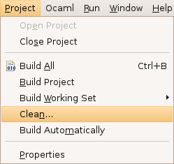

Cleaning a project can be useful when you want to get rid of object files (cmo, cmx, ...), or when you want to force your project to be recompiled from scratch.
To clean a project, click on Project > Clean:

You should then get this dialog box:
You can choose to clean all the projects in your workspace (which can take a lot of time), or a selection of projects. If the Start a build immediately checkbox is checked, the projects will be immediately rebuilt after being cleaned.
Hint: There is a shortcut for cleaning a project when a file from this project is being edited: click on Ocaml > Clean.
Hint 2: You can also clean an Ocaml Makefile Project (or Ocaml Empty Makefile Project) by right clicking on the project in the navigator and selecting Clean Project. This action will always clean the project without rebuilding it, no matter what the state of the Project > Build Automatically checkbox.